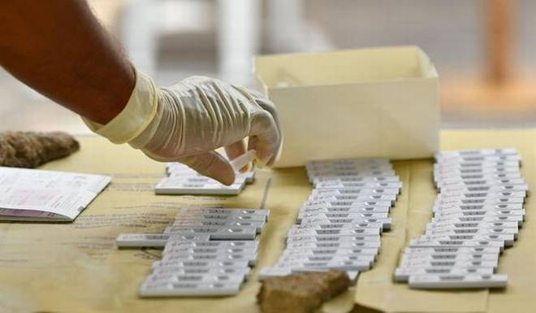

Coronavirus | India continues to have one of the lowest COVID-19 cases per million globally
Sonam Saigal
NEW DELHI, NOVEMBER 01, 2020 15:14 IST
UPDATED: NOVEMBER 01, 2020 15:14 IST
Seventeen States and UTs have COVID-19 cases per million lower than the national average.

Active cases of COVID-19 in India remained below 6 lakh for the third consecutive day, comprising only
6.97 per cent of the total caseload, the Union Health Ministry said on Sunday.
The trajectory of the active caseload across different states and UTs has been diverse demonstrating
their focused efforts and gradual progress in their fight against COVID-19, the ministry said, noting
Karnataka has reported a steep decline in the active cases in a span of 24 hours.
“With the consistent decline in the active cases, the cases per million in India are among lowest in the
world. India’s average cases per million stand at 5,930,” it highlighted.
Seventeen States and UTs have COVID-19 cases per million lower than the national average.
“For the third day after the active cases dropped below the 6 lakh mark after nearly three months, the
progressive decline has been maintained,” the ministry underlined
Presently, there are 5,70,458 active coronavirus infections in the country.
The active cases have dropped to only 6.97% of the total cases of the country demonstrating a steady
falling percentage of the total cases, the ministry stated.
This sustained achievement is the result of collaborative action by States and UTs under the Centre’s
strategy of comprehensive testing, timely tracking, quick hospitalization and adherence to the Standard
Treatment Protocol which has ensured a standardised quality of medical care across the public and
private hospitals and for the home isolation cases.
There has been a steady decline in the number of daily deaths in India. A total 470 deaths have been
reported in a span of 24 hours in the country. India’s deaths per million population is one of the
lowest in the world and stands at 88.
Twenty-one states and UTs have deaths per million lower than the national average, the ministry said.
“The declining trend of the percentage active cases is commensurately supported by the rising percentage
of recovered cases. The total recovered cases have surged to 74,91,513 and exceed active cases of
COVID-19 by 69,21,055.
With an increasing number of recoveries, this gap is continuously widening.
Higher number of recoveries has aided the national recovery rate to further improve to 91.54%. A total
of 58,684 people have recovered and were discharged in a span of 24 hours as against 46,963 infections
reported during the same period.
Seventy-six per cent of the new recovered cases are observed to be concentrated in 10 States and UTs.
Karnataka, Kerala and Maharashtra have contributed the maximum to the new recovered cases with more than
7,000 single day recoveries. Delhi and West Bengal, both have added more than 4,000 to the new
recoveries, the ministry said.
A total of 46,963 new coronavirus infections were recorded in a span of 24 hours of which 77% are from
10
States and UTs. Kerala is still reporting a very high number of new cases with more than 7,000 cases
followed by Maharashtra and Delhi with more than 5,000 cases.
As many as 470 case fatalities have been reported in a span of 24 hours. Of these, nearly 78 per cent
are
concentrated in ten states and UTs.
More than 15% of new fatalities reported are from Maharashtra (74 deaths).
India’s COVID-19 caseload mounted to 81,84,082 with 46,963 new infections being reported in a day, while
the
death toll climbed to 1,22,111 with 470 new fatalities, the data updated at 8 am showed.